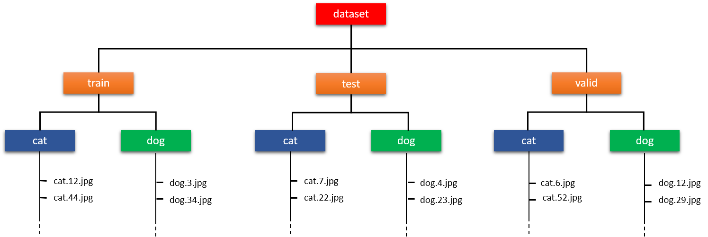

Vitis AI Tutorials |
Moving Seamlessly Between Edge and Cloud with Vitis AI |
This tutorial shows you how to compile and run the same identical design and application code on either the Alveo U50 data center accelerator card or the Zynq® UltraScale+™ MPSoC ZCU102 evaluation board.
The virtually seamless transition between Edge and Cloud is made possible by the new Vitis™ AI RunTime (VART), introduced in the 1.1 release of Vitis AI.
The dataset used in this example is Kaggle’s dogs-vs-cats.
Current Status¶
Tested with Vitis AI 1.2 on Alveo U50 & ZCU102
Introduction¶
We will run the following steps:
Download and preparation of the Kaggle dogs-vs-cats dataset.
Training and evaluation of a simple custom CNN using TensorFlow’s built-in version of Keras.
Conversion of the saved Keras checkpoint (HDF5 format) to TensorFlow checkpoint format.
Removal of the training nodes and conversion of the graph variables to constants (..often referred to as ‘freezing the graph’).
Evaluation of the frozen model using the dogs-vs-cats test dataset.
Quantization of the frozen model using the Xilinx® quantizer provided as part of Vitis AI.
Evaluation of the quantized model using the dogs-vs-cats test dataset.
Compilation of the quantized model for execution on either the Alveo U50 or the ZCU102.
Execution of the network with the provided Python scripts.
The complete flow and the tools used at each step is shown in the figure below:

The Kaggle Dogs-vs-Cats Dataset¶
The Kaggle dog-vs-cats dataset consists of 25000 images of varying dimensions, divided into the two classes of cat and dog. Each image is intrinsically labelled or classified by its filename, for example the image with filename cat.12.jpg is obviously of class cat.
There is also a set of labelled images which were part of the original Kaggle dogs-vs-cats challenge, but we will ignore this set and only use the 25000 images that are contained in the train.zip archive.
The 25000 images are all resized to 200 x 250 pixels and then divided into one of the train, validation or test datasets. They are further sub-divided into class folders to make the folder structure compatible with the Keras .flow_from_directory() method.
The size of 200 x 250 pixels was chosen after studying the distribution of the aspect ratios in the dataset and to keep training times reasonable.

The Convolution Neural Network¶
The customcnn.py script uses the Keras Functional API to describe the simple CNN. It is a fully-convolutional network and has no fully-connected/dense layers. There are also no pooling layers, data reduction is achieved by using convolutional layers that have strides greater than one.
The CNN has deliberately been kept simple (so the expected prediction accuracy will not be much higher than approximately 92%. To reduce overfitting, batch normalization, dropout and L2 kernel regularization have been used.

The number of skip blocks and the number of filters used in each one is set by the ‘filters’ list argument - one skip block will be created for each element in the list.
Implementing the Design¶
This section will lead you through the steps necessary to run the design in hardware.
Preparing the Host Machine and Target Boards¶
The host machine has several requirements that need to be met before we begin. You will need:
An x86 host machine with that meets the sytem requirements and internet access to download files.
Optionally, a GPU card suitable for training (a trained checkpoint is provided for those who wish to skip the training step).
You should follow the host and target setup instructions provided in Quick Start for Edge and in Alveo card setup. Ignore the DPUCAHX8H Overlays Setup section as we will run that as part of this tutorial.
For more details, refer to the latest version of the Vitis AI User Guide (UG1414).
Downloading the Design and Setting up the Workspace¶
This repository should be downloaded to the host machine as a zip file and then unzipped to a folder, or cloned using the git clone command from a terminal.
Note that each Vitis-AI tutorial is provided as a separate git branch, so the clone command should specify the correct branch and the target folder you want to clone to:
git clone -b Moving-Edge-Cloud https://github.com/Xilinx/Vitis-AI-Tutorials.git <target_folder_path>
Download the Kaggle dog-vs-cats dataset - note that you will need to register and create an account on the Kaggle website before being able to download the dataset.
Move the downloaded dogs-vs-cats.zip file into the ‘files’ folder of the design repository (i.e the same folder as the python (.py) and shell (.sh) scripts).
Open a linux terminal, cd into the repository folder then into the ‘files’ folder. Start the Vitis AI docker - if you have a GPU in the host system, it is recommended that you use the GPU version of the docker container. If you intend running the model training, you will definitely need the GPU docker container. If you are going to skip the training phase, then the CPU docker container will be sufficient:
# navigate to densenet tutorial folder
cd <path_to_densenet_design>/files
# to start GPU docker
source ./start_gpu_docker.sh
# ..or to start CPU docker
source ./start_cpu_docker.sh
The docker container will start and you should see something like this in the terminal:
==========================================
__ ___ _ _ _____
\ \ / (_) | (_) /\ |_ _|
\ \ / / _| |_ _ ___ ______ / \ | |
\ \/ / | | __| / __|______/ /\ \ | |
\ / | | |_| \__ \ / ____ \ _| |_
\/ |_|\__|_|___/ /_/ \_\_____|
==========================================
Docker Image Version: latest
Build Date: Wed Apr 15 11:01:32 CEST 2020
VAI_ROOT=/opt/vitis_ai
For TensorFlow Workflows do:
conda activate vitis-ai-tensorflow
For Caffe Workflows do:
conda activate vitis-ai-caffe
For Neptune Workflows do:
conda activate vitis-ai-neptune
mharvey@XITMHARVEY33:/workspace$
:bulb: If you get a “Permission Denied” error when running the start_gpu_docker.sh or start_cpu_docker.sh scripts, it is almost certainly because the docker_run.sh script is not set to be executable. You can fix this by running the following command:
chmod +x ./docker_run.sh
Now run the environment setup script: source ./0_setenv.sh
This will set up all the environment variables (..mainly pointers to folder and files..) most of which users can edit as required. It will also create the folders for the logs and the trained keras checkpoint.
The 0_setenv.sh script also activates the ‘vitis-ai-tensorflow’ TensorFlow conda environment, so you should now see that the terminal prompt looks like this:
(vitis-ai-tensorflow) mharvey@XITMHARVEY33:/workspace$
Step 1 - Arranging the Dataset¶
To run step 1: source ./1_create_datasets.sh
The 1_create_datasets.sh shell script calls the create_datasets.py Python script which will unzip the downloaded dogs-vs-cats archive, create the necessary folders and then split the files into the train, validation or test datasets based on a 70:20:10 split. The files are randomly shuffled before being split into the datasets.
The create_datasets.py scripts has four command line arguments:
| Argument | Type | Default value | Description |
| ————————- | ———|:—————–:| —————————————————————|
| --dataset_dir or -d | string | ./dataset | The path to the dataset root folder |
| --overwrite or -o | string | true | true - always create a new dataset |
| | | | false - only create a new dataset if it doesn’t already exist |
| --input_height or -ih | integer | 200 | Input images will be resized to this height (pixels) |
| --input_width or -iw | integer | 250 | Input images will be resized to this width (pixels) |
Note: The image resizing could also have been done on-the-fly as part of the Keras image augmentation - this however slows down training considerably, so resizing has been implemented as a run-only-once part of the dataset preparation.
Step 2 - Training¶
Training takes a considerable time, between 8-12 hours depending on the GPU. Users can either:
Reduce the number of epochs by editing the
export EPOCHS=180line in the0_setenv.shshell script. Obviously, less epochs of training will have a negative impact on the final accuracy.Skip the training phase altogether and use the pretrained Keras checkpoint available in the pretrained/keras_model.zip archive. The k_model.h5 file inside this zip archive should be copied to the ./files/build/keras_model folder and the remaining parts of Step 1 should be skipped and users should go direct to Step 2.
Depending on how much memory your GPU card has, it may be necessary to modify the
export BATCHSIZE=80line in the0_setenv.shshell script. If you run out of memory during training, then try reducing it.
To run step 2: source ./2_train.sh
The ./2_train.sh shell script calls the train.py script which executes the training, evaluation and prediction accuracy testing and uses some advanced features of Keras:
Images are read from disk using the flow_from_directory() method.
On-the-fly image augmentation is used:
Normalization of pixel values from 0:255 to 0:1
Random flipping along the vertical axis.
Random vertical and horizontal shifts.
Shuffling of the images between epochs.
The weights & biases from the epoch with the best validation accuracy are automatically saved in the Keras HDF5 checkpoint.
train.py has several command line arguments:
| Argument | Type | Default value | Description |
| ————————- | ———|:—————–:| ——————————————-|
| --input_height or -ih | integer | 200 | Height in pixels of input images |
| --input_width or -iw | integer | 250 | Width in pixels of input images |
| --input_chan or -ic | integer | 3 | Number of channels in input image |
| --dataset or -d | string | ./dataset | The path to the dataset root folder |
| --batchsize or -b | integer | 25 | The training data batchsize |
| --learnrate or -lr | float | 0.0001 | The learning rate used by the optimizer |
| --epochs or -e | integer | 100 | The number of training epochs |
| --keras_json or -kj | string | None | path to JSON file for saving Keras model |
| --keras_hdf5 or -kh | string | ./model.hdf5 | path to HDF5 file for saving Keras model |
| --aug or -a | string | None | path to folder for saving augmented images |
| --tboard or -tb | string | ./tb_logs | path to folder for saving TensorBoard data |
After training has finished, the trained Keras checkpoint will be found in the ./files/build/keras_model folder as an HDF5 file called k_model.h5.
Note: Any error messages relating to CUPTI can safely be ignored.
Step 3 - Convert the Keras HDF5 Checkpoint to a TensorFlow Frozen Graph¶
To run step 3: source ./3_keras2tf.sh
The Vitis AI tools cannot operate directly on Keras checkpoints and require a TensorFlow compatible frozen graph as the input format. The 3_keras2tf.sh shell script will create the frozen graph in two steps:
The HDF5 file is converted to a TensorFlow checkpoint.
The TensorFlow checkpoint is converted to a ‘frozen graph’ in binary protobuf format.
The output .pb file is generally known as a ‘frozen graph’ since all variables are converted into constants and graph nodes associated with training such as the optimizer and loss functions are stripped out.
After this step is completed, there should be a protobuf file called ‘frozen_graph.pb’ in the ./files/build/freeze folder.
Step 4 - Evaluate the Frozen Graph¶
To run step 4: source ./4_eval_frozen.sh
This is an optional step as the frozen graph is still in floating-point format and should give almost identical accuracy results as the evaluation done during the training phase (step 1). All images of the test set are passed through the frozen model and the accuracy is calculated.
Step 5 - Quantize the Frozen Graph¶
To run step 5: source ./5_quant.sh
The DPU accelerator IP executes all calculations in 8bit integer format, so we must quantize our floating-point frozen graph. This is done by the Vitis AI tools, in particular by the ‘vai_q_tensorflow quantize’ command. This command can be seen in the 5_quant.sh script and has several arguments that we must provide values for:
| Argument | Description |
|———————- | ————————————————————– |
|--input_frozen_graph | path and name of the input .pb frozen graph |
|--input_fn | Name of input function used in calibration pre-processing |
|--output_dir | Name of the output folder where the quantized models are saved |
|--input_nodes | Name(s) of the input nodes |
|--output_nodes | Name(s) of the output nodes |
|--input_shapes | Shape(s) of the input nodes |
|--calib_iter | Number of calibration iterations |
Note: Any error messages relating to ./bin/ptxas can be ignored.
Most of the arguments are self-explanatory but special mention needs to be made of –input_fn and –calib_iter.
We require a sample set of data to calibrate the quantization process. This data will be passed through the model and so must be pre-processed in exactly the same way as the data is pre-processed in training…the function pointed to by the –input_fn argument will need to contain all of the pre-processing steps.
A random list of images from the training set to be used for the calibration is created by the make_calib_list.py python script
The image_input_fn.py Python script contains a single function called calib_input (..hence we set –input_fn to image_input_fn.calib_input in the 5_quant.sh shell script..) which opens the images with OpenCV, flips them to RGB from BGR as the model was trained on RGB images and then normalizes them to have all pixels in the range 0 to 1.0, exactly as was done in training and evaluation.
The number of images generated for use in calibration is set by the CALIB_IMAGES environment variable in the 0_setenv.sh script. Care should be taken that the number of calibration iterations (–calib_iter) multiplied by the calibration batch size (set in the image_input_fn.py script) does not exceed the total number of available images (CALIB_IMAGES).
Once quantization has completed, we will have the quantized deployment model (deploy_model.pb) and the evaluation model (quantize_eval_model.pb) in the ./files/build/quantize folder.
Step 6 - Evaluate the Quantized Model¶
To run step 6: source ./6_eval_quant.sh
This is an optional, but highly recommended step. The conversion from a floating-point model where the values can have a very wide dynamic range to an 8bit model where values can only have one of 256 values almost inevitably leads to a small loss of accuracy. We use the quantized evaluation model to see exactly how much impact the quantization process has had.
The exact same Python script, eval_graph.py, that was used to evaluate the frozen graph is used to evaluate the quantized model.
Step 7 - Compile the Quantized Model¶
To run step 7: source ./7_compile_zcu102.sh or source ./7_compile_u50.sh
The DPUCZDX8G (for Zynq) and DPUCAHX8H (for Alveo U50) are soft-core IPs whose only function is to accelerate the execution of convolutional neural networks. They are co-processors with their own instruction sets - those instructions are passed to the DPUCZDX8G in .elf file format or in .xmodel format to the DPUCAHX8H.
The Vitis AI compiler will convert, and optimize where possible, the quantized model to a set of micro-instructions and then output them to either .elf or .xmodel files depending on the value of the –arch argument passed to the vai_c_tensorflow command.
Note that the input graph to the two compile commands is different. For the Zynq DPUCZDX8G it is deploy_model.pb and for the Alveo DPUCAHX8H it is quantize_eval_model.pb.
Step 8 - Run the Application on the Target Board¶
For ZCU102:¶
To run step 8: source ./8_make_target_zcu102.sh
This final step will copy all the required files for running on the board into the ./files/build/target_zcu102 folder. The entire target_zcu102 folder will need to be copied to the ZCU102 SDcard. The 8_make_target_zcu102.sh script also copies the test set images to target_zcu102/images - the application code will preprocess and classify these images.
Copy it to the /home/root folder of the flashed SD card, this can be done in one of several ways:
Direct copy to SD Card:
If the host machine has an SD card slot, insert the flashed SD card and when it is recognised you will see two volumes, BOOT and ROOTFS. Navigate into the ROOTFS and then into the /home folder. Make the ./root folder writeable by issuing the command
sudo chmod -R 777 rootand then copy the entire target folder from the host machine into the /home/root folder of the SD card.Unmount both the BOOT and ROOTFS volumes from the host machine and then eject the SD Card from the host machine.
With scp command:
If the ZCU102 is connected to a network and reachable by the host machine, the target folder can be copied using scp. If you connect directly from your host machine to the ZCU102 using ethernet, you may need to set up static IP addresses.
The command will be something like
scp -r ./build/target_zcu102 root@192.168.1.227:~/.assuming that the ZCU102 IP address is 192.168.1.227 - adjust this and the path to the target folder as appropriate for your system.If the password is asked for, insert ‘root’.
With the target folder copied to the SD Card and the ZCU102 booted, you can issue the command for launching the application - note that this done on the ZCU102 board, not the host machine, so it requires a connection to the ZCU102 such as a serial connection to the UART or an SSH connection via Ethernet.
The application can be started by navigating into the target_zcu102 folder (cd target_zcu102) and then issuing the command python3 app_mt.py -m model_dir/dpu_customcnn.elf. The application will start and after a few seconds will show the throughput (in frames/sec) and the accuracy:
$ python3 app_mt.py -m model_dir/dpu_customcnn.elf
----------------------------
Command line options:
--image_dir : images
--threads : 1
--model : model_dir/dpu_customcnn.elf
----------------------------
Pre-processing 2500 images...
Starting 1 threads...
FPS=191.86, total frames = 2500 , time=13.0301 seconds
Correct: 2426 Wrong: 74 Accuracy: 0.9704
For better throughput, the number of threads can be increased like this:
$ python3 app_mt.py -t 8 -m model_dir/dpu_customcnn.elf
----------------------------
Command line options:
--image_dir : images
--threads : 8
--model : model_dir/dpu_customcnn.elf
----------------------------
Pre-processing 2500 images...
Starting 8 threads...
FPS=694.47, total frames = 2500 , time=3.5998 seconds
Correct: 2426 Wrong: 74 Accuracy: 0.9704
For Alveo U50:¶
This final step will copy all the required files for running on the board into the ./files/build/target_u50 folder. Note that these steps need to be run from inside of the Vitis AI Docker container.
To run step 8: source ./8_make_target_u50.sh and then follow the extra steps outlined below.
Run the U50_overlay.sh script (internet connection required) to download and install the correct overlay (note that the U50 will need to have been flashed with correct deployment shell - this should have been done in the ‘Preparing the host machine and target boards’ section above). The complete steps to run on the Alveo U50 are as follows:
source ./U50_overlay.sh
cd ./build/target_u50
/usr/bin/python3 app_mt.py -m model_dir/customcnn.xmodel
You should see something like this:
mharvey@XITMHARVEY33:/workspace/build/target_u50$ /usr/bin/python3 app_mt.py -m model_dir/customcnn.xmodel
Command line options:
--image_dir : images
--threads : 1
--model : model_dir/customcnn.xmodel
Pre-processing 2500 images...
Starting 1 threads...
FPS=509.50, total frames = 2500 , time=4.9068 seconds
Correct: 2426 Wrong: 74 Accuracy: 0.9704
Similar to the ZCU102, the number of threads can be increased for higher throughput:
mharvey@XITMHARVEY33:/workspace/build/target_u50$ /usr/bin/python3 app_mt.py -m model_dir/customcnn.xmodel -t 8
Command line options:
--image_dir : images
--threads : 8
--model : model_dir/customcnn.xmodel
Pre-processing 2500 images...
Starting 8 threads...
FPS=2507.25, total frames = 2500 , time=0.9971 seconds
Correct: 2426 Wrong: 74 Accuracy: 0.9704